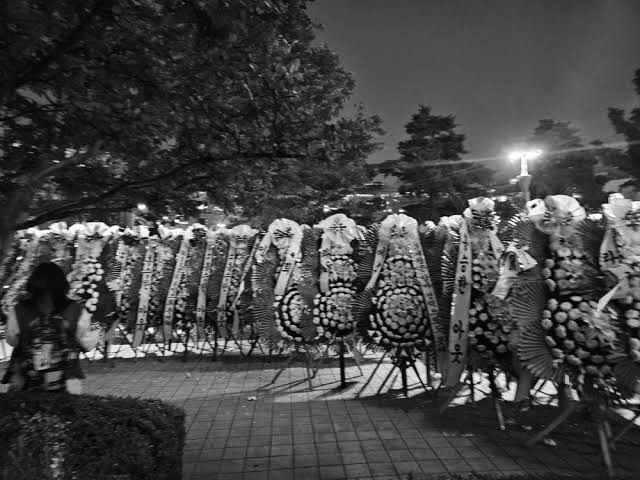
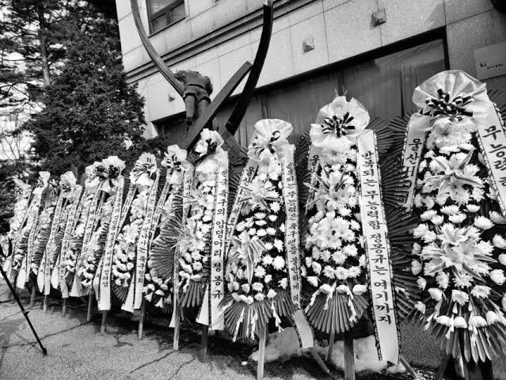

Seribu Bunga Kematian di Depan Gedung Agensi sebagai Bentuk Protes Penggemar Terhadap Kembalinya Salah Satu Anggota Grup.
ditulis oleh Muhammad Raihan Nugraha pada 2 November 2024
Baru-baru ini, group RIIZE dari SM Entertainment mengalami situasi yang cukup sulit setelah pengumuman tentang salah satu anggotanya, Seunghan. Setelah hanya dua hari sejak mengumumkan kembalinya Seunghan ke grup, manajemen mengumumkan bahwa ia memutuskan untuk meninggalkan RIIZE secara permanen. Keputusan ini diambil setelah munculnya reaksi negatif dari penggemar yang merasa tidak nyaman dengan kembalinya Seunghan, yang sebelumnya terlibat dalam kontroversi terkait kebocoran foto pribadinya
Para penggemar RIIZE telah mengambil langkah yang cukup kontroversial dengan mengirimkan sekitar seribu karangan bunga duka cita ke depan gedung SM Entertainment sebagai bentuk protes terhadap kembalinya anggota mereka, Seunghan. Tindakan ini merupakan respons atas keputusan manajemen yang mengumumkan bahwa Seunghan, yang sebelumnya disuspensi selama sepuluh bulan karena kontroversi terkait foto pribadinya yang bocor, akan kembali bergabung dengan grup. Karangan bunga tersebut dilengkapi dengan pesan-pesan yang menuntut agar Seunghan keluar dari RIIZE, menegaskan ketidakpuasan fans terhadap keputusan ini

Keberadaan bunga-bunga tersebut di luar gedung SM menarik perhatian publik dan media, menunjukkan betapa seriusnya sebagian penggemar dalam mengekspresikan ketidaksetujuan mereka. Karangan bunga ini biasanya dikirim untuk pemakaman, sehingga tindakan ini merupakan simbol kuat dari ketidaksetujuan mereka. Di bunga-bunga tersebut, tertulis pesan-pesan yang menyiratkan harapan agar RIIZE kembali menjadi grup dengan enam anggota, tanpa kehadiran Seunghan. Aksi ini menarik perhatian publik karena tidak biasa dan menunjukkan betapa seriusnya sebagian fans dalam mengekspresikan pendapat mereka terhadap arah grup. Seunghan sebelumnya sempat ditangguhkan dari grup pada bulan November tahun lalu setelah bocornya video dan foto pribadi yang menunjukkan perilaku yang dianggap tidak pantas, termasuk merokok dan berinteraksi intim dengan seorang wanita.
Pada 11 Oktober 2024, pengumuman tentang kembalinya Seunghan dibuat, tetapi hanya dua hari kemudian, pihak manajemen meminta maaf kepada penggemar atas kebingungan yang ditimbulkan dan mengonfirmasi keputusannya untuk mundur demi kebaikan bersama. Dalam surat perpisahan yang ditulis tangan, Seunghan menjelaskan bahwa keputusannya untuk keluar dari grup adalah demi menghindari beban bagi rekan-rekan dan penggemar, serta untuk menjaga hubungan baik antara RIIZE dan fandom mereka, BRIIZE. Dia mengungkapkan keprihatinannya melihat penggemar yang seharusnya saling mendukung justru berkonflik karena situasi ini. Manajemen RIIZE, Wizard Production, menegaskan bahwa mereka menghargai keputusan Seunghan dan akan mendukungnya untuk meraih impian di masa depan. Mereka juga menyampaikan permohonan maaf atas ketidaknyamanan yang dialami oleh penggemar akibat situasi ini  . Meskipun RIIZE kini akan melanjutkan aktivitas sebagai grup enam anggota tanpa Seunghan, banyak penggemar tetap berharap yang terbaik untuk masa depan kariernya

Source:
https://koreajoongangdaily.joins.com/news/2024-10-14/entertainment/kpop/Riizes-Seunghan-leaves-group-after-fan-backlash-over-return/2154225
https://philstarlife.com/celebrity/110513-k-pop-star-seunghan-to-permanently-leave-riize?page=2#